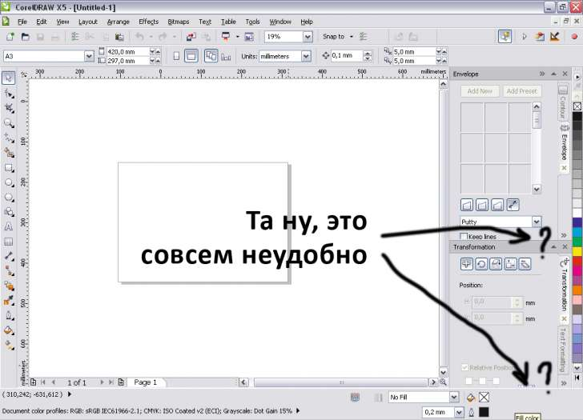
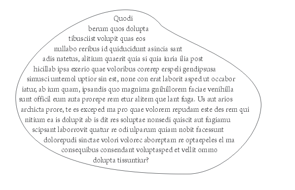

Edit Contents двойным кликом не знаю, как сделать, не нашел.
Ctrl+Click
Добавлено (20.05.2010, 10:16) --------------------------------------------- а на счет редактирования и превью, я тоже предпочитаю шоп, но если речь идет о фильтрах, то обрати внимание, на замочек рядашком со словом Preview. Нажми и будет тебе рилтаймовое превью.
Sinto / 26.05.2010, 14:54
А вот можно вопрос - почему в кореле инструмент Спираль (при нажатии с CTRL-ом) выглядит как бы это сказать...не идеально. Овальная она какая-то млин... Или это ужо подравняли?
Des425 / 26.05.2010, 18:10
В Corel два вида спирали: 1. Symmetrical (Стандартная) 2. Logarithmic (Принцип Фибаначи или золотое сечение, уже не помню)
Black / 26.05.2010, 19:33
Sinto, а каким боком ваш вопрос относится к теме "Сбор пожеланий для CorelDRAW X6"?
aler / 26.05.2010, 23:10
Перечитывать всю тему пожеланий несколько утомительно, поэтому извините, если такое уже было и я повторюсь. ...немного инфы: кроме CorelDRAW и Photoshop ещё юзаю 3D программу CINEMA 4D, а в ней, как по мне, интерфейс и рабочий процесс почти идеальны (см. скриншот - там интерфейс настроен под себя). В ней всё в реалтайме, почти нигде нет кнопки ОК и лишь изредка встречается кнопка Apply - для работы всё суперудобно, поэтому где-то ориентируюсь на эту программу.
1. Полная интерактивность и реалтайм интерфейса, а не как сейсас - изменения подтверждаются кнопкой ОК (или хотя бы как в Шопе просмотр в реальном времени, а если подтвердить, то кнопка ОК).
2. Прокрутка значений в строке Ввода колёсиком мышки при наведении мышки над этой строкой (или хотя бы как в Фотошопе: клик в строке Ввода значений > прокрутка колёсиком).
3. Точка, как альтернатива запятой для ввода дробных значений.
4. Сборщик Цветов, как в Синеме (на скриншоте видно).
5. Отмена, Ctrl+Z чтоб работала и в диалогах.
6. нормальный плавный Зум, как во всех 3D программах (и ещё видел в Anime Studio - 2D прога), а не как сейчас, скачками.
7. В менеджере Объектов возможность Спрятать/Показать для каждого объекта.
8. Переключение Манипуляторов трансформации (маркеры размера) между глобальными и локальными осями объекта, т.е. если объект повёрнут, то и маркеры поворачиваются вместе с ним (как в Иллюстраторе) - соответственно возможность изменения размеров под углом.
9. Изменение размера для Линий/Кривых и тоже под углом и с возможностью задавать точку отсчёта.
10.Свободный Деформатор (как в Иллюстраторе "Палец", а в Фотошопе шикарные инструменты фильтра "Liquify" или на худой конец "Smudge Tool").
11.Деформаторы, как в Иллюстраторе "Флаг", "Ветер" и т.д. (там их много...).
12.Локальная деформация: по выделенным точкам, а лучше по заданному участку рамкой выделения.
13.Инверсия выделения объектов.
14.Улучшить инструмент "Размазывающая кисть" (не помню как в англ. версии), а то уж очень кошмарненький и некорректно работает.
Пока вроде бы всё. Сильно правда сомневаюсь, что кто-то станет глобально ядро программы переписывать, но раз здесь всё же просят высказывать свои пожелания, то я и высказал :)
Превью при коррекции растра долго "думает". В Х5-м, конечно, быстрее, но все равно.
Edit Contents двойным кликом не знаю, как сделать, не нашел.
Докеры по группам располагаются как-то неприятно:

Ctrl+Click
Добавлено (20.05.2010, 10:16)
---------------------------------------------
а на счет редактирования и превью, я тоже предпочитаю шоп, но если речь идет о фильтрах, то обрати внимание, на замочек рядашком со словом Preview. Нажми и будет тебе рилтаймовое превью.
1. Symmetrical (Стандартная)
2. Logarithmic (Принцип Фибаначи или золотое сечение, уже не помню)
...немного инфы: кроме CorelDRAW и Photoshop ещё юзаю 3D программу CINEMA 4D, а в ней, как по мне, интерфейс и рабочий процесс почти идеальны (см. скриншот - там интерфейс настроен под себя). В ней всё в реалтайме, почти нигде нет кнопки ОК и лишь изредка встречается кнопка Apply - для работы всё суперудобно, поэтому где-то ориентируюсь на эту программу.
1. Полная интерактивность и реалтайм интерфейса, а не как сейсас - изменения подтверждаются кнопкой ОК (или хотя бы как в Шопе просмотр в реальном времени, а если подтвердить, то кнопка ОК).
2. Прокрутка значений в строке Ввода колёсиком мышки при наведении мышки над этой строкой (или хотя бы как в Фотошопе: клик в строке Ввода значений > прокрутка колёсиком).
3. Точка, как альтернатива запятой для ввода дробных значений.
4. Сборщик Цветов, как в Синеме (на скриншоте видно).
5. Отмена, Ctrl+Z чтоб работала и в диалогах.
6. нормальный плавный Зум, как во всех 3D программах (и ещё видел в Anime Studio - 2D прога), а не как сейчас, скачками.
7. В менеджере Объектов возможность Спрятать/Показать для каждого объекта.
8. Переключение Манипуляторов трансформации (маркеры размера) между глобальными и локальными осями объекта, т.е. если объект повёрнут, то и маркеры поворачиваются вместе с ним (как в Иллюстраторе) - соответственно возможность изменения размеров под углом.
9. Изменение размера для Линий/Кривых и тоже под углом и с возможностью задавать точку отсчёта.
10.Свободный Деформатор (как в Иллюстраторе "Палец", а в Фотошопе шикарные инструменты фильтра "Liquify" или на худой конец "Smudge Tool").
11.Деформаторы, как в Иллюстраторе "Флаг", "Ветер" и т.д. (там их много...).
12.Локальная деформация: по выделенным точкам, а лучше по заданному участку рамкой выделения.
13.Инверсия выделения объектов.
14.Улучшить инструмент "Размазывающая кисть" (не помню как в англ. версии), а то уж очень кошмарненький и некорректно работает.
Пока вроде бы всё. Сильно правда сомневаюсь, что кто-то станет глобально ядро программы переписывать, но раз здесь всё же просят высказывать свои пожелания, то я и высказал :)
А как Вы таблицу из Word-a формируете ?
Может что-нибудь не так делаете?
чтобы любой замкнутый контур можно было преобразовать в текстовый блок (рамку)

Страницы